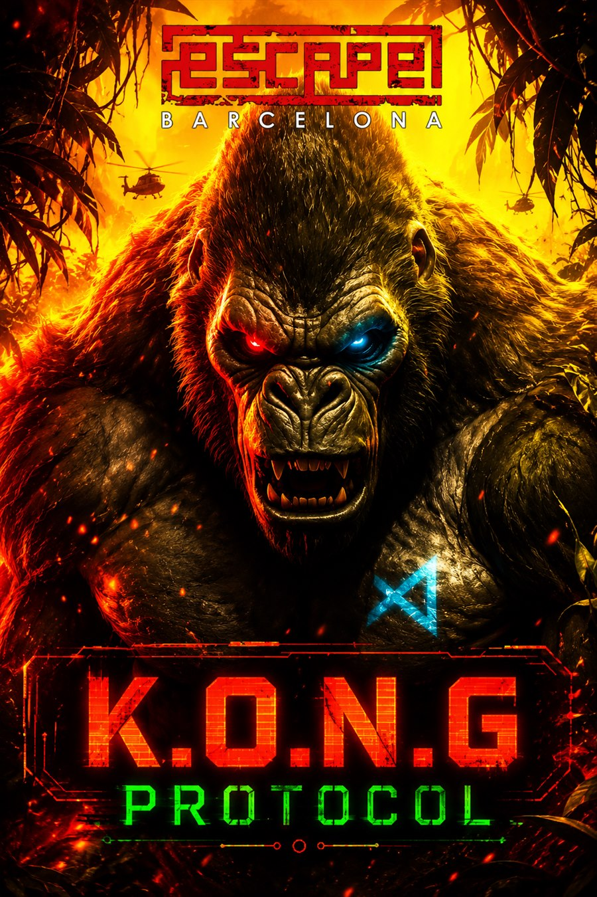

Sala destacada #34
K.O.N.G Protocol
Escape Barcelona
Nota global: 9.7/10
K.O.N.G Protocol de Escape Barcelona en Santa Coloma de Gramenet. Nota global 9.7/10 con 2 fuentes y 10 premios o nominaciones. Consulta datos, sinopsis,...